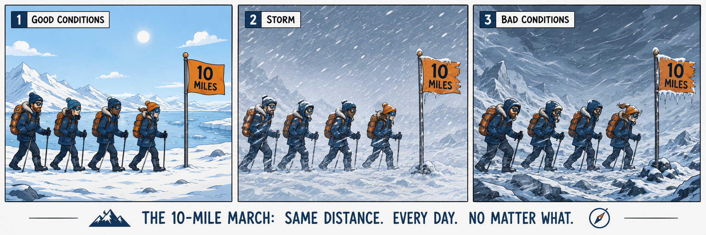

Fanatic Discipline means planning to make steady, repeatable progress even when conditions are difficult. In the arctic expedition metaphor, the team plans to march ten miles every day. Other expeditions might go thirty miles in good weather and stop when the storm hits; the disciplined expedition keeps moving — not heroically, but reliably.
The point is not rigidity for its own sake. The point is reliable progress under pressure. In a six-month Business & Performance secondment, that means the same agreed definitions, the same validation checks, the same reporting rhythm and the same ownership — week after week — so something durable is left behind when the post ends.
The risk is not just data migration. It is definition migration — and definition drift happens fastest when teams skip the boring, consistent work.